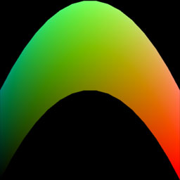

The purpose of Project 3 is to further an understanding of vertex buffers by generating a geometric figure in JavaScript code, conveying that definition to the GPU, and triggering the rendering of the figure by the GPU.
The basic details of this geometric figure are given in the notes on the course web site, under the section A Generated Mesh.
Create a new remote repository called "project3" on classes.csc.lsu.edu, and clone it to your local computer.
Instead of building off an example from the book, build off your solution for Project 2. To begin, copy the five files from that project into your project3 directory, but rename the HTML and JavaScript files to:
Grapher.htmlGrapher.jsAs before, format your code consistently. We will deduct points for bad format.
Implement code to generate a mesh in the xz-plane where n = 16 and render it as triangles.
The notes describe a flat plane, where y = 0 everywhere. Modify this so that y = 1 - x2 - z2. The output will be a 3D graph of an inverted paraboloid, like a graphing calculator might produce.
A few notes on GL usage:
Use this vertex shader:
attribute vec4 a_Position;
varying mediump vec4 v_Color;
void main() {
v_Color = (a_Position + 1.0) / 2.0;
gl_Position = a_Position;
}
Use this fragment shader:
varying mediump vec4 v_Color;
void main() {
gl_FragColor = v_Color;
}
Be sure to gl.enable(gl.DEPTH_TEST); in your initialization code.
A correct output looks like this:
Remove any dead code that was copied forward from Project 2. Make certain that every line of code in Project 3 does something relevant. For example, the triforce vertex array isn't used anymore, so remove it. Code maintenance is an important skill, and we deduct points for junk code.
Add the files you've created to the project's working copy and commit them to the local repository. Push these changes from your local repository to your remote repository on classes.csc.lsu.edu before the deadline.